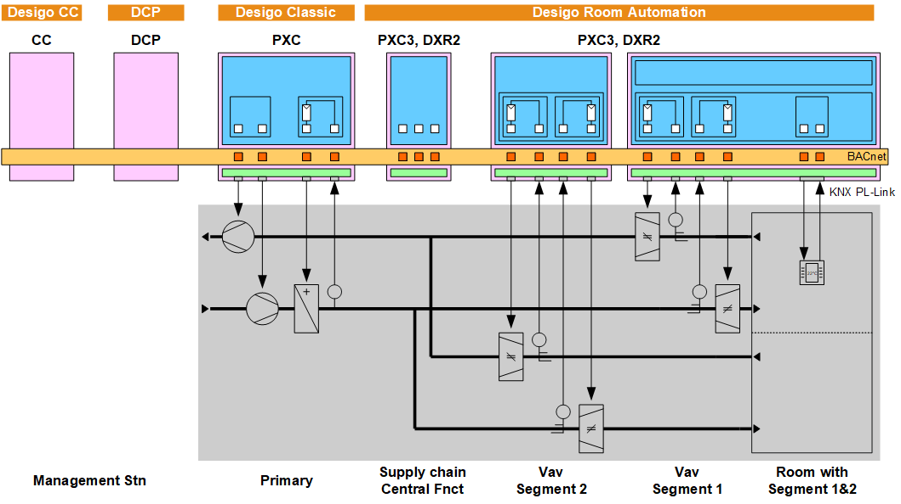
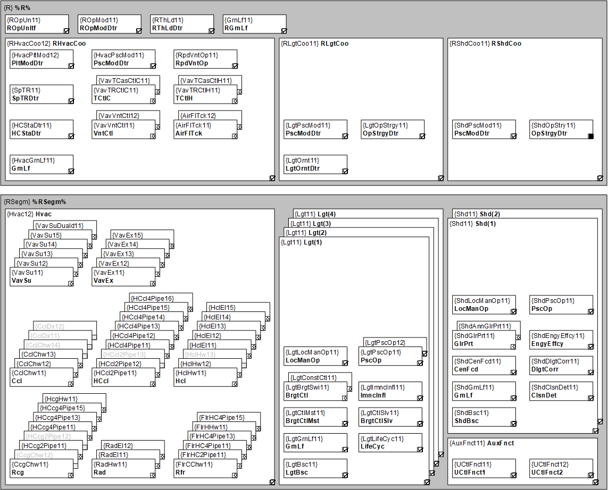
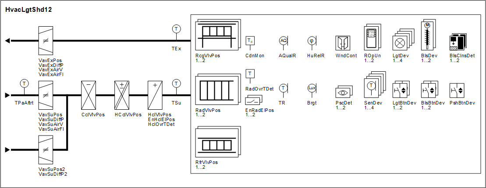

Desigo Room Automation 中的概念
Desigo Room Automation 允许 HVAC、照明和遮阳机械和电气装置无缝交互。这样可以实现能源优化运行（A 级能源效率），并在房间内提供最大的舒适度。
Levels from the view of building technical control
共有三个级别：
- Primary plant
- Room automation (central functions, room and room segment)
- Management level

- The management level monitors and operates sections of buildings, buildings, and building groups. Access can be classified for different users (roles). See below, Operating and monitoring.
- The primary plant controls HVAC supply: Centralized air handling, heating circuit, cooling circuit. Requirements from the rooms are reported to the primary plant, forced and release signals from the primary plant act on the rooms.
Functionality at the primary level is beyond the scope of this documentation. - Central functions supply defaults for groups of rooms: For emergency, protection, service, central operation, and exterior shells (using daylight, shading).
Central functions - The supply chain collects demand information from the rooms to control the primary plant based on demand
- All superposed, coordinated tasks occur in the room, for example, formation of room operating mode with the associated setpoint, temperature control, influences on energy efficiency including thermal load by solar influence, that acts on shading.
- The room segment includes inputs (sensors, switches, buttons, presence detectors, etc.) and outputs (actuators for valves and dampers, actuating devices for fans, electric registers, blinds, and lights, etc.) as well as their interactions (request, locking).
- The sub-classification into room and room segment permits change in room use in an elegant manner. If partitions are removed, all the original room segment application functions can be coordinated to form a single room application function. Any unneeded room application functions are switched to "Unused". This is accomplished by simply changing the group assignment, e.g. on the management station.
Room/segment
Communication between levels
- Between room automation and primary plant: Communication via BACnet references.
- Between room automation and management level: Communication via BACnet references.
- Between central functions and rooms: Communication via grouping.
- Between room and segment(s): Communication via grouping.
Room/segment - From and to the field devices: Communication is freely selectable. Direct wiring on the room automation station terminals, a TX-I/O unit or a KNX PL-Link device, bus integration KNX PL-Link, DALI or Ethernet.
Software
软件元素称为应用程序功能 (AFs)。
应用类型是一个房间（由房间和房间段组成）的最大软件解决方案。还存在一种具有所有核心功能的应用程序类型。
应用程序类型包括控制 HVAC、照明和着色所需的所有应用程序功能。所请求的功能是通过激活工具中必需的 AFs 并设置参数值来实现的。
Hardware
应用程序功能的功能独立于：
- the room automation stations (see below, engineering)
- sensors and actuators
- physical units
Units of measure, engineering units
Application library
应用程序库有四种房间应用程序类型：
- HvacLgtShd11: Fan-Coil with outside air damper, radiator, heated/chilled ceiling
- HvacLgtShd12: VAV with radiator and heating/chilled ceiling
- HvacLgtShd13: Fan-powered Box with radiator and heated/chilled ceiling
此外，每种应用类型都包括用于散热器、加热天花板的 AFs，以及用于控制 4 个照明区域和 2 个遮阳区域的 AFs。
附加应用程序类型包括所有中央功能。
Central functions
下图显示了包含所有 AFs 的应用类型 HvacLgtShd12 (VAV) 以及包含所有可连接现场设备的房间：


Operation and monitoring
- The room user can intervene using the local room operator unit and select and modify operating mode, setpoint, scenes, etc. Push buttons or room operator unit are used to operate lighting and shading. The room operator can display room temperature, air quality, setpoints, fan speed, etc.
- System technicians and electricians access individual BACnet objects via web interface based on their access rights and tasks.
- Facility manager, service and maintenance personnel can monitor and operate setpoints, parameters, inputs, and outputs on the management station.
- The Desigo management station graphics library supports the most important room automation application data points. Select the corresponding object in the room and go to the web interface to access configuration extensions.
Engineering
Tools
应用程序库中提供了一系列经过测试的最大解决方案（应用程序类型）。
工具 ABT Site 和 ABT Pro 可以为应用程序类型中的房间选择（启用）项目所需的功能。参数可以设置功能细节。结果保存为应用程序模板，并作为其他房间的模板。
在ABT Pro工具中，应用程序库除了包含完整的应用程序类型之外，还包括所有元素，以便可以自由编译应用程序甚至应用程序类型。然后可以通过 ABT 站点配置自由编程的应用程序。
Hardware
在房间自动化站上运行的应用程序。
- PXC3s do not have their own inputs and outputs. They reside on the TX-I/O modules or on the bus devices (KNX PL-Link, DALI, Ethernet).
- DXR2s have on-board inputs and outputs. The I/O mix is optimized for each device type for one or more application types (Fan coil, VAV, etc.). The KNX PL-Link room bus is used to control lighting and blinds.
DXR2 上预加载了一种或多种应用程序类型。这极大地简化了调试，因为无需将整个应用程序下载到每个房间自动化站，而只需将一个包含所选功能和参数值信息的应用程序文件下载到即可。
Parameter types
由于架构、数据流量和 BACnet 上的可见性的原因，有多种参数类型。在 ABT 站点中，类型不可见，那里提供的参数可能需要针对项目进行修改。其他参数可以随时呈现可见。
在某种程度上，不同类型显示在 ABT Pro 中的不同位置。
- Important parameters are designed as individual BACnet configuration values that are viewable on the management station and are often operated during operation (e.g. setpoints for room temperature and air quality), or parameters viewed for commissioning in the web interface of the device (e.g. to calibrate air components or lighting controls).
- BACnet configuration extensions (CnfExtn) are structured objects with a collection of parameters for a single application function. The parameters are visible as properties for the corresponding BACnet object. They cannot be adjusted online.
- Properties specific to the subsystem (properties for input and output objects) must also be visible and adjusted on BACnet if viewable during engineering with ABT Pro.
- Parameters that normally cannot or may not be changed, are only accessible on the Room programming editor charts.
Room automation functions and their engineering
装置/功能 | DXR2.M... | DXR2.E... | PXC3.E... |
|---|---|---|---|
公共汽车 | MS/TP | 以太网 | 以太网 |
硬件 |
|
|
|
应用领域 | 预载 | 预载 | 下载或预加载 |
配置 | ABT Site | ABT Site | ABT Site |
编程 | （选修的） | （选修的） | 可使用 ABT Pro 自由编程 |